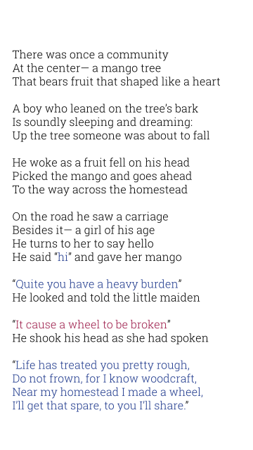
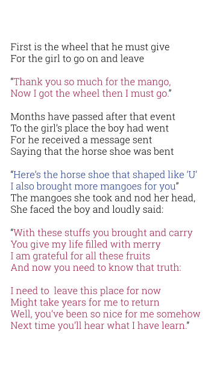
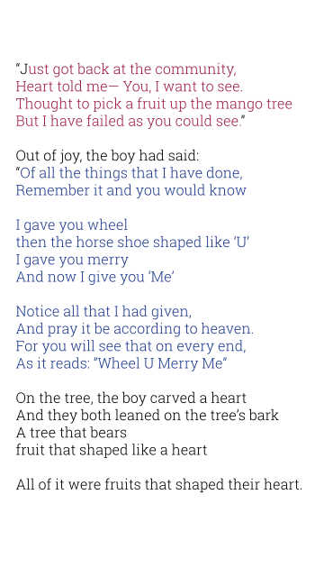

=author("JP Aguilar") =title("Fruits that Shaped Heart") =synopsis("First short story written by JP Aguilar -- Two people found each other and decides to be together in their life journey ahead.")
  